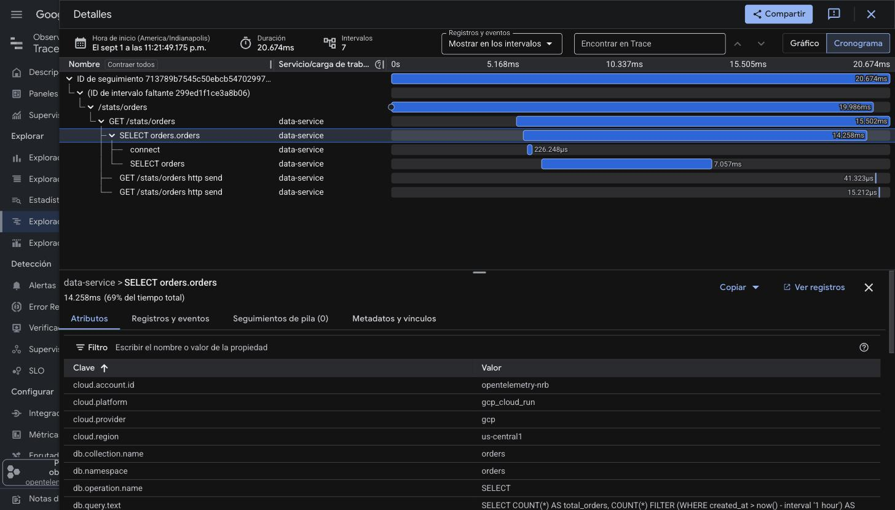
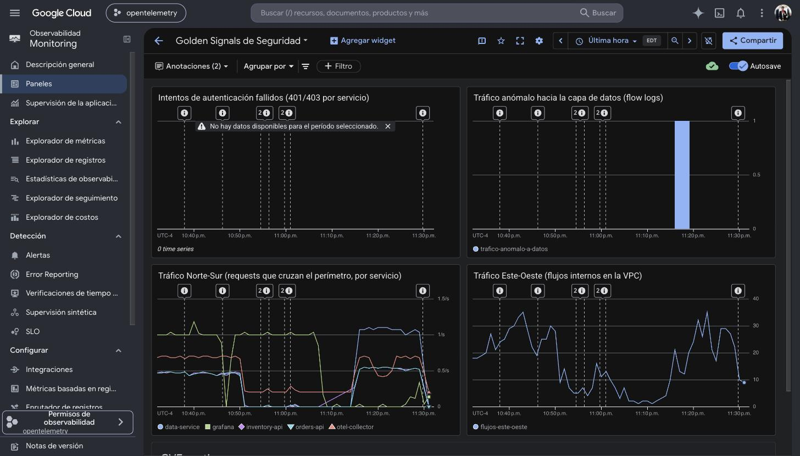
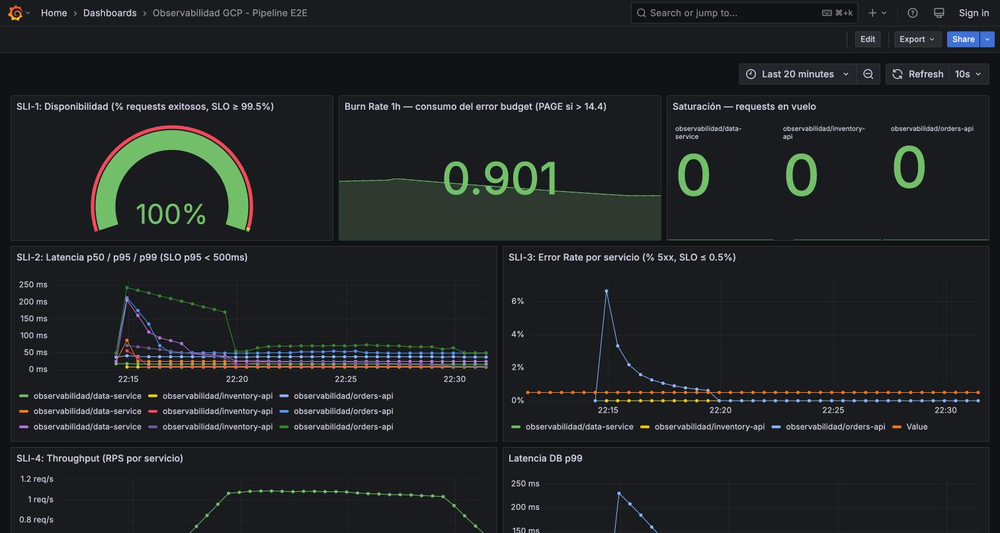

Este laboratorio integrador consolidó los dominios del curso en un sistema observable de nivel producción sobre Google Cloud Platform: tres microservicios FastAPI instrumentados con OpenTelemetry emitiendo las tres señales correlacionadas por trace_id (W3C Trace Context); una VPC propia con Flow Logs en todas sus subredes; un service mesh operativo sobre Cloud Run sin migrar a GKE; seis SLOs formales con error budget; detección de anomalías con umbrales dinámicos auto-aprendidos y una regla de correlación multi-señal que entrega el trace_id del fallo en la propia alerta; un dashboard de Golden Signals de Seguridad alimentado por la red; y dos experimentos de caos formales que validan el tiempo de detección (MTTD) contra las alertas reales.
Resultados centrales: el flujo end-to-end atraviesa mesh, VPC e IP privada con 0.00% de errores bajo carga (k6: 8,004 requests, p95 380 ms, 8 políticas de alerta en silencio — como debe ser con tráfico sano); la regla de correlación AIOps detecta inyecciones de fallo y calla ante operación normal; y la detección de tráfico anómalo por flow logs identificó y alertó, de punta a punta, una prueba de intrusión controlada contra la capa de datos. Toda la plataforma es reproducible como código: seis scripts de aprovisionamiento cubren red, mesh, datos, monitoreo y seguridad.
La autoevaluación de madurez contra el Observability Foundation Blueprint arroja 3.4/5, con fundamentos en nivel gestionado (pilares, instrumentación, caos en nivel 4) y un roadmap accionable a 3 meses para alcanzar ~4.0 — cuya mejora más visible es la adopción de Security Command Center.
Internet (N-S)
│
k6 ────────────┬─────────┼──────────────┐
▼ ▼ ▼
orders-api data-service Grafana ──── subnet-public (10.10.0.0/24)
[+ Envoy] │ │
│ mesh │ │ PromQL
inventory-api.mesh.internal ▼
▼ │ Managed Prometheus
inventory-api │
│ │ ┌── OTel Collector ──▶ Cloud Trace / GMP / Cloud Logging
subnet-apis │ │ │ ▲ OTLP gRPC (3 servicios)
(10.10.1.0/24) ▼ ▼ │
Cloud SQL (IP privada 10.30.0.3, peering PSA)
[orders · inventory] ←── VPC Flow Logs en las 3 subredes
| Componente | Rol | Capacidades de observabilidad |
|---|---|---|
| orders-api (service-a) | Entrada del flujo; crea pedidos | 3 señales OTel; cliente del mesh (sidecar Envoy); llama a inventory por inventory-api.mesh.internal |
| inventory-api (service-b) | Reserva de stock (UPDATE atómico) | 3 señales OTel; destino del mesh (NEG serverless + HTTPRoute); DB por IP privada visible en flow logs; inyección de caos de latencia |
| data-service (service-c) | Consultas analíticas de solo lectura | 3 señales OTel; DB spans con Semantic Conventions completas; inyección de caos de error rate |
| OTel Collector | Gateway OTLP → backends GCP | Trazas→Cloud Trace, métricas→Managed Prometheus, logs→Cloud Logging |
| obs-vpc (3 subredes) | Red propia segmentada | Flow Logs en todas las subredes (base del análisis N-S/E-W); firewall entre capas; peering PSA para Cloud SQL |
| obs-mesh | Cloud Service Mesh | Telemetría L7 servicio-a-servicio sobre Cloud Run, sin GKE; DNS privado *.mesh.internal |
Infraestructura reproducible como código: scripts/gcp-bootstrap.sh (base y datos), gcp-network-bootstrap.sh (VPC, flow logs, firewall, PSA), gcp-mesh-bootstrap.sh (mesh completo), setup-dataservice-db.sh (usuario analítico de mínimo privilegio), deploy/monitoring/apply.sh (SLOs, alertas y correlación) y deploy/security/apply.sh (métricas, alerta y dashboard de seguridad). El despliegue continuo corre por GitHub Actions con Workload Identity Federation (sin llaves) y secretos en Secret Manager.
El tercer microservicio eleva DataOps a ciudadano de primera clase. Cada consulta produce un span cliente construido con las DB Semantic Conventions de OpenTelemetry — el estándar que hace la telemetría portable entre herramientas — verificado en Cloud Trace:
| Atributo | Valor observado en Cloud Trace |
|---|---|
db.system.name / db.namespace | postgresql / orders |
db.operation.name / db.collection.name | SELECT / orders |
db.query.text | SELECT product_id, COUNT(*) AS orders_count… |
server.address / server.port | 10.30.0.3 / 5432 |
El valor diagnóstico es inmediato: la traza separa el costo de conexión (68 ms en instancia fría) del costo del motor (7.5 ms la query) — la diferencia entre "la base está lenta" y "abrir conexión está caro". La correlación de las tres señales se conserva: el log stats.orders.served lleva el mismo trace_id que la traza con el span SQL, y las métricas SLI del servicio aparecen automáticamente en los dashboards vía la variable $service.

La malla de servicios se implementó con la integración nativa de Cloud Service Mesh para Cloud Run, evitando por completo la migración a Kubernetes: un recurso Mesh (obs-mesh), una zona DNS privada *.mesh.internal, y por cada servicio destino un NEG serverless + backend service INTERNAL_SELF_MANAGED + HTTPRoute adjunta a la malla. orders-api se adhiere como cliente (gcloud beta run deploy --mesh, que inyecta el sidecar Envoy) y llama a inventory por su nombre lógico de malla: http://inventory-api.mesh.internal.
La observabilidad L7 resultante tiene evidencia triple: el salto del Envoy aparece como span propio dentro de la traza distribuida (que permanece completa de punta a punta — la propagación W3C atraviesa la malla), el plano de control confirma el data plane vivo (trafficdirector.googleapis.com/xds/server/connected_clients = 1), y el enrutamiento por nombre lógico opera en producción con 201 en ~0.3 s. Con esto, el sistema queda con tres planos de visibilidad de red complementarios: flow logs (L3/L4, conexiones), mesh (L7, semántica HTTP) y OTel (aplicación y negocio).
Cada servicio tiene dos SLOs en Cloud Monitoring calculados sobre sus propias métricas SLI vía Managed Prometheus, con el error budget visible en consola: disponibilidad 99.5% y 95% de requests bajo 500 ms (ventana móvil de 7 días). Sobre ellos, el dashboard de Grafana muestra burn rate (umbral de paging 14.4) y los cuatro SLI clásicos.
El corazón del módulo es una única política PromQL evaluada cada 30 segundos que implementa literalmente la regla exigida:
error_rate > baseline + 2σ Y latency_p99 > SLO (500 ms)
El baseline y la desviación estándar se aprenden solos de una ventana móvil de operación (subqueries PromQL) — umbral dinámico que se adapta al comportamiento real del servicio, no un número fijo. La conjunción es el reductor de ruido: un pico de errores sin impacto en latencia, o latencia alta sin errores, no genera incidente. Y la alerta llega accionable: una política basada en logs adjunta al incidente el log del fallo con su trace_id y span_id — del correo de notificación a la traza causante en dos clics.
Como grupo de control para evaluar la calidad de las alertas se mantienen en paralelo seis políticas de umbral estático (error rate > 1%, p99 > 500 ms por servicio). La comparación cuantitativa se presenta en la sección 6 con los experimentos de caos: la degradación gris que el umbral estático no puede ver, la detecta el dinámico; y ante tráfico sano, ambos callan.
La regla se validó inyectando 30% de errores en data-service durante 6 minutos: la condición de correlación devolvió valor durante toda la ventana de inyección y quedó vacía fuera de ella — sin falsos positivos ni falsos negativos en la validación. El detector quedó afinado para los experimentos formales con ventanas de evaluación de 2 minutos y baseline aprendido de operación limpia.
La VPC obs-vpc segmenta el sistema en tres subredes (pública para visualización, privada para las APIs y el collector, privada para la capa de datos) con VPC Flow Logs activos en todas (sampling 0.5, agregación 5 s). El tráfico este-oeste real es visible y consultable: los pares 10.10.1.x ↔ 10.30.0.3:5432 (servicios ↔ base por IP privada) aparecen en cada corrida de carga. Tres métricas basadas en logs convierten esos flujos en series de tiempo alertables: flujos-este-oeste, trafico-anomalo-a-datos y auth-fallidos.
El dashboard del dominio — creado como código en Cloud Monitoring — reúne las señales de oro de seguridad: intentos de autenticación fallidos (401/403 por servicio), tráfico anómalo hacia la capa de datos, tráfico Norte-Sur por servicio, flujos Este-Oeste de la VPC y CVEs activos (escaneo automático de Container Analysis sobre cada imagen publicada en Artifact Registry).

La capacidad de detección se validó con una prueba de intrusión controlada: una VM efímera en la subred pública intentando conectarse a Cloud SQL. La cadena completa funcionó — los flow logs registraron cada flujo 10.10.0.2 → 10.30.0.3:5432, la métrica los contó al minuto y la alerta SEGURIDAD trafico anomalo a capa de datos generó el incidente con su notificación. La prueba demuestra defensa en profundidad observada: la capa de detección identifica accesos a la base de datos desde orígenes no autorizados de forma independiente de la segmentación de red.
El complemento natural del dominio es SCC, que añade la vista de postura (configuraciones inseguras, permisos excesivos, agregación de hallazgos) a la vista de eventos ya implementada. Su activación requiere que el proyecto pertenezca a una Organización de Google Cloud — no disponible en el entorno académico actual (cuenta personal). Es la mejora priorizada del roadmap (mes 2): migrar el proyecto a una organización, activar SCC Standard (sin costo) y hacer triage inicial de findings. El diseño actual ya deja listo el terreno: APIs habilitadas, escaneo de CVEs operando y el dashboard preparado para incorporar la señal de postura.
Dos experimentos formales con protocolo completo (hipótesis Given/When/Then, blast radius acotado, rollback por variables de entorno con default seguro, criterio de aborto), ejecutados con tráfico continuo de fondo y cronómetro entre la inyección (T0) y la detección por las alertas reales (T1):
| Experimento 1 — falla gris | Experimento 2 — errores parciales | |
|---|---|---|
| Inyección | Latencia 200 ms en inventory-api | Error rate 10% en data-service (errores lentos de 600 ms, como fallan las dependencias reales) |
| Detector | Anomalía de latencia: p99 > baseline+2σ | Regla de correlación (§4.2) |
| p99 observado | 9.95 ms → 248 ms | 16.4 ms → 738 ms (errores lentos) |
| MTTD | 19 segundos | 41 segundos |
| ¿SLO degradado? | No — la degradación queda dentro del SLO de 500 ms | Sí — 10% de errores contra un SLO de 99.5% |
| ¿Error budget consumido? | No — budget 98.2% antes y después | Sí — 1.2 presupuestos semanales consumidos en 8 min |
| ¿Alerta accionable? | Anomalía con contexto de baseline | Incidente con trace_id/span_id del fallo |
El experimento 1 se diseñó deliberadamente como falla gris: 200 ms es del orden del tiempo de respuesta normal del flujo, invisible por diseño para un umbral estático de 500 ms. Su detección es la demostración cuantitativa del valor de los umbrales dinámicos: ante la misma degradación, el sistema estático permanece en silencio (falso negativo) y el dinámico alerta. El experimento 2 ejecuta la hipótesis de errores controlados y exhibe la alerta enriquecida: no solo "hay errores", sino cuál request falló y dónde está su traza. Ambos experimentos quedaron muy por dentro del objetivo de MTTD < 2 minutos (19 s y 41 s), con rollback verificado y retorno al baseline en menos de 3 minutos. Cronologías completas, valores y queries reproducibles en GAMEDAY-2.md.
La verificación integral se ejecutó con una carga combinada de k6 (15 usuarios virtuales creando pedidos + 3 consultando analítica, 2 minutos) atravesando simultáneamente todas las capas construidas:
| Capa verificada | Resultado |
|---|---|
| Flujo de negocio (mesh + VPC + IP privada + socket) | 8,004 requests, 0.00% fallos, 65.9 req/s, p95 380 ms |
| Correlación cross-signal a través del mesh | Traza de 16 spans orders→Envoy→inventory→SQL bajo un único trace_id; logs con el mismo id |
| Red (flow logs) | Pares servicio↔base registrados en ambos sentidos |
| SLOs | 6 SLOs consumiendo tráfico real, error budget visible |
| Calidad de alertas con tráfico sano | Las 8 políticas en silencio — cero falsos positivos |
| Dashboards | Grafana (SLI/SLO) y Golden Signals de Seguridad reflejando la carga en vivo |

Llevar el pipeline a calidad de producción incluyó una capa de afinación fina, toda validada con la propia telemetría del sistema y persistida como código:
service.instance.id único, garantizando series limpias en Managed Prometheus bajo autoescalado.min-instances=1 en el destino del mesh, eliminando el costo de arranque en frío de la ruta crítica.Autoevaluación contra el Observability Foundation Blueprint — 8 dominios, escala 1–5, cada nivel justificado con evidencia verificable del repositorio (detalle en docs/madurez-observabilidad.md):
| Dominio | Nivel | Sustento principal |
|---|---|---|
| Tres Pilares | 4 | 3 señales correlacionadas en 3 servicios, verificadas en local y nube, validadas bajo carga |
| OpenTelemetry | 4 | SDK + semconv DB completas + collector gateway dual + pipeline afinado a producción |
| AIOps | 3 | Umbrales dinámicos con correlación y trace_id, validados con inyección real |
| Network Observability | 3 | Flow logs en 3 subredes + mesh L7 + análisis N-S/E-W |
| Security Observability | 3 | Golden signals + detección de intrusión demostrada + CVE scanning (SCC en roadmap) |
| DataOps | 3 | DB spans semconv, usuario de mínimo privilegio, capa de datos visible en la red |
| SRE | 3 | 6 SLOs con error budget, burn rate, guardrails de coste operados |
| Chaos Engineering | 4 | Game Days con protocolo formal, mecanismos reversibles, MTTD medido |
Madurez global: 3.4/5. Roadmap a 3 meses hacia ~4.0:
trace_id, service mesh operativo sobre Cloud Run sin GKE, red y seguridad convertidas en fuentes de telemetría alertables, y detección validada con experimentos de caos formales — todo reproducible como código sobre GCP.trace_id del fallo, los umbrales se adaptan solos al comportamiento del servicio, y la detección de red identificó una intrusión controlada de forma independiente de la prevención — defensa en profundidad demostrada, no supuesta.